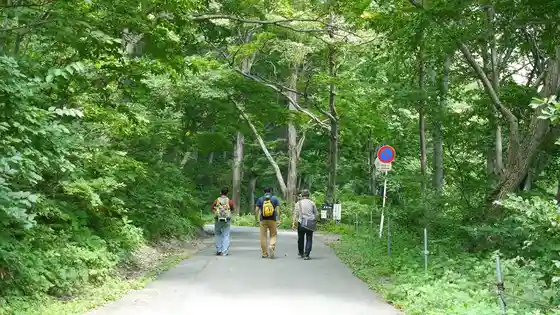
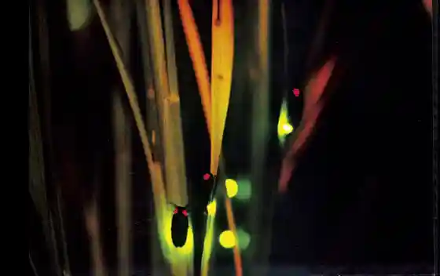
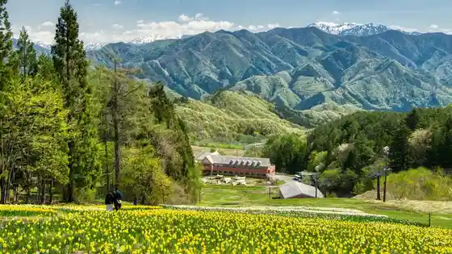
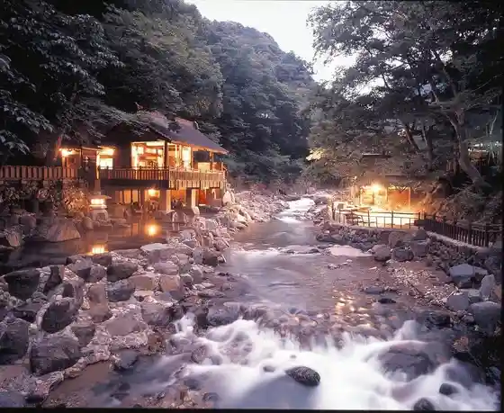

Tanigawadake Ichi no Kurasawa Socho Hiiringu Tour
Minakami, Gunma · 0278-62-0401 · Official / source link

Minakami Hotaru Village
Minakami, Gunma · 0278-62-0401 · Official / source link

no Run Minakami Furawa Garden
Minakami, Gunma · 0278-72-6681 · Official / source link

Nagurumi Joshi
Minakami, Gunma · 0278-62-0793 · Official / source link
Minakami 18 Yu
Minakami, Gunma · 0278-62-0401 · Official / source link

Tanigawadake
Minakami, Gunma · Official / source link
Doai Eki
Minakami, Gunma · 0278-62-0401 · Official / source link
Suijo Kogen Sukii Resort
Minakami, Gunma · 0278-75-2222 · Official / source link
Aimata Dam (Akaya Mizumi)
Minakami, Gunma · 0278-66-0034 · Official / source link
TaigaGlass
Minakami, Gunma · 0278-72-6885 · Official / source link
Tsukiyono Yaki Yutaro Kama
Minakami, Gunma · 0278-72-5307 · Official / source link
Naramata Dam Bosai Museum (Hirutoppu Naramata)
Minakami, Gunma · 0278-24-5711 · Official / source link
Fujiwara Dam
Minakami, Gunma · 0278-75-2006 · Official / source link
Yagi Sawa Dam Bosai Museum (Neichabyu Yagi Sawa)
Minakami, Gunma · 0278-24-5711 · Official / source link
Yamaki (Kabu) Minakami Kojo
Minakami, Gunma · 0278-62-1231 · Official / source link
Roadside Station Minakami Mizu Kiko Kan
Minakami, Gunma · 0278-72-1425 · Official / source link
Akaya Mizumi Memorial Park
Minakami, Gunma · 0278-62-0401 · Official / source link
Mikuniyama O Hanahata
Minakami, Gunma · 0278-62-0401 · Official / source link
Roadside Station Tsukiyono Yaze Shinsui Park
Minakami, Gunma · 0278-20-2123 · Official / source link
Yagi Sawa Dam
Minakami, Gunma · 0278-62-0401 · Official / source link
Suwa Kyo
Minakami, Gunma · 0278-25-5017 · Official / source link
Fujiwara Mizumi
Minakami, Gunma · 0278-25-5017 · Official / source link
Mikunitoge
Minakami, Gunma · 0278-25-5017 · Official / source link
Naramata Dam
Minakami, Gunma · 0278-24-5711 · Official / source link
Shoyo Kyo
Minakami, Gunma · 0278-25-5017 · Official / source link
BUNGY JAPAN (Banjiijapan)
Minakami, Gunma · 0278-72-8133 · Official / source link
Minakami Furutsu Land Mogitore
Minakami, Gunma · 0278-64-2800 · Official / source link
Minakami Kanu
Minakami, Gunma · 0278-72-5070 · Official / source link
Kaferesutoran A Shi Asa
Minakami, Gunma · 0278-72-3326 · Official / source link
Tanigawadake Yohho by Hoshino Resort (Kyu Tanigawadake Ropuei)
Minakami, Gunma · 0278-72-3575 · Official / source link
Kaferesutoran A Shi Asa (Ashima)
Minakami, Gunma · 0278-72-3326 · Official / source link
Hodaigi Ski Area
Minakami, Gunma · 0278-75-2557 · Official / source link